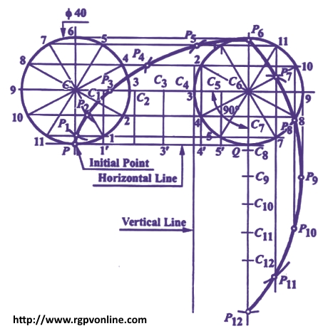

Que . 13 : A circle of 5 cm diameter is rolling on a straight line without slipping. Draw the locus of a point on the circle and name the curve.
एक वृत्त जिसका व्यास 5 cm एक सीधी रेखा पर लुढ़क रहा है। इस वृत्त की परिधि पर स्थित एक बिंदु का locus draw करो और curve का नाम भी बताओ।
Answer : .: As the circle revolves along a line, thus the curve generated will be a cycloid.
The cycloid as shown in figure is drawn as discussed below -
(i) Draw rolling circle of diameter 40 mm. Let P be the point on circumference of circle whose locus has to be traced out. Draw base line PQ equals to half the circumference of rolling circle (since it revolves half revolution along horizontal line)
(ii) Divide the rolling circle into 12 equal parts as 1,2,3, etc. Draw horizontal lines through 1, 2, 3, .....6 and through the centre C.

line 8-8' equal to 8 / 10 PQ, and so on. The line PQ thus has been divided into ten equal parts.